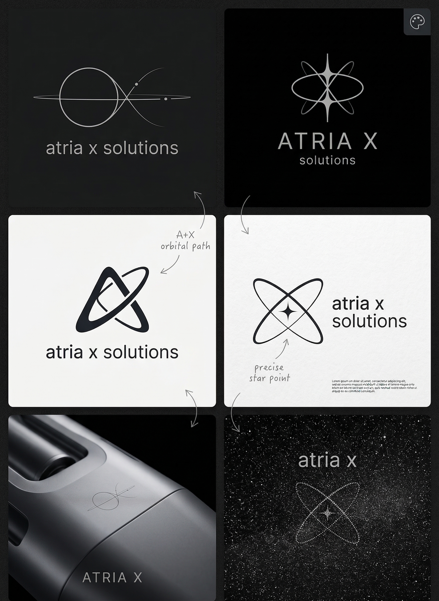
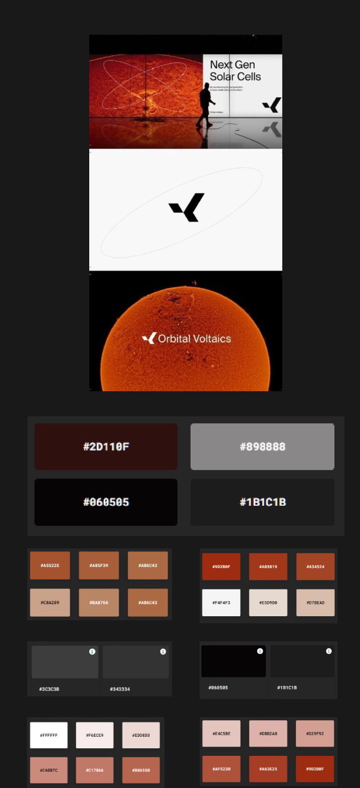
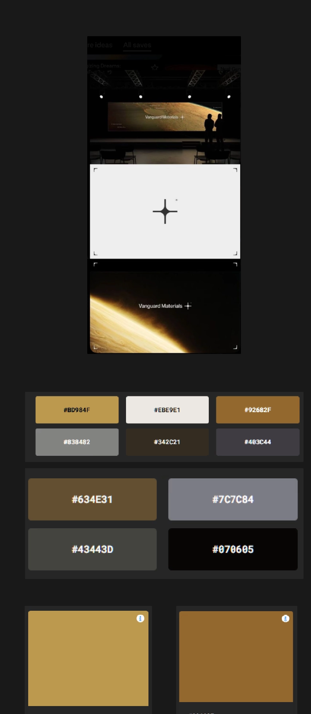

2. Brand Identity & Visual Direction
From brand intent to a visual system
Gathering references and moodboards from Pinterest along with studying the minimalist clarity of Apple, the technical dominance of Nvidia, and the agile service architecture of DaCodes I explored how to interpret the client's request for a "futuristic" website without sacrificing usability.
The result was a high-contrast system built around a dark foundation, clear type, a focused yellow accent, and a visual language inspired by connection and scale.
Visual Foundation & References
Translating the moodboards into a tangible visual direction, defining the high-contrast color palette that drives the futuristic aesthetic.

Inspiration & Moodboard 1
Inspiration & Moodboard 2
Inspiration & Moodboard 3 Core Brand Colors- Extended palette omitted for client confidentiality
Core Brand Colors- Extended palette omitted for client confidentiality
Final Brand Application
How the final logo and UI components come together across different touchpoints to create a cohesive brand experience.